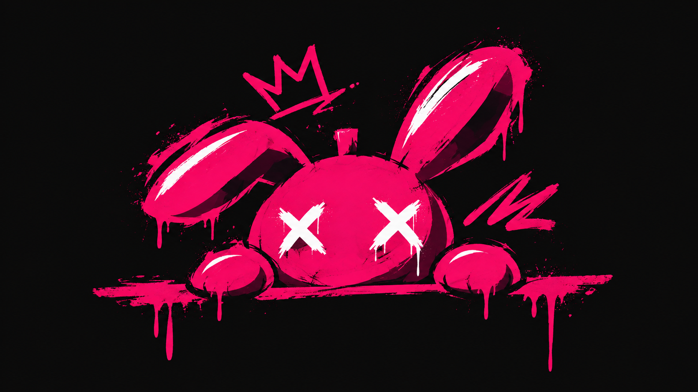

SELECTED WORK / SOULARTНемного хаоса.
Немного хаоса.
Много характера.
Айдентика, редакционный дизайн и цифровые истории. Работы, в которых идея становится визуальным языком.



Превращаю идеи в визуальные истории.
И даю им жизнь.
Я - Мария Матвеева. Графический и мультидисциплинарный дизайнер. Соединяю выразительный визуал с продуманной системой: от айдентики и иллюстрации до интерфейсов и живых продуктов.
Айдентика, редакционный дизайн и цифровые истории. Работы, в которых идея становится визуальным языком.
Дизайн → код → продукт.
Идеи обретают форму.
Я объединяю дизайн и код в одном процессе. От первой концепции до интерфейса, с которым хочется взаимодействовать.
Полный цикл создания продукта: концепция, дизайн, разработка и тестирование. ИИ помогает ускорять рутинные задачи - направление и решения остаются моими.
Интеллектуальная экосистема для планирования жизни с ИИ-ассистентом EVE.
Обсудить проект ↗Проведи зайца от первой мысли до готового продукта.
Лови светящиеся пиксели по порядку.
Каждый продукт начинается с «а что, если…».
Отключи лишнее. Выбери одну задачу.
В дизайне с 2022 года. Мне близки смелые идеи, выразительная типографика и иллюстрации с характером. Люблю соединять аккуратную систему с живой, немного бунтарской эстетикой.
RE: FORM - мой личный проект. Здесь я одновременно дизайнер, разработчик, менеджер и идейный вдохновитель. Один человек + ИИ = полноценная студия.